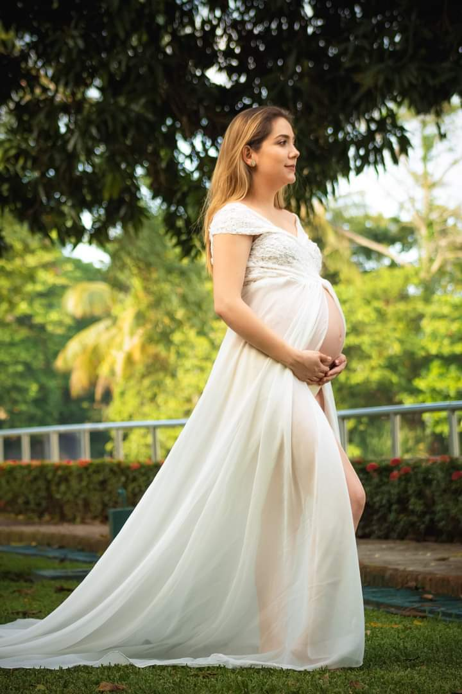
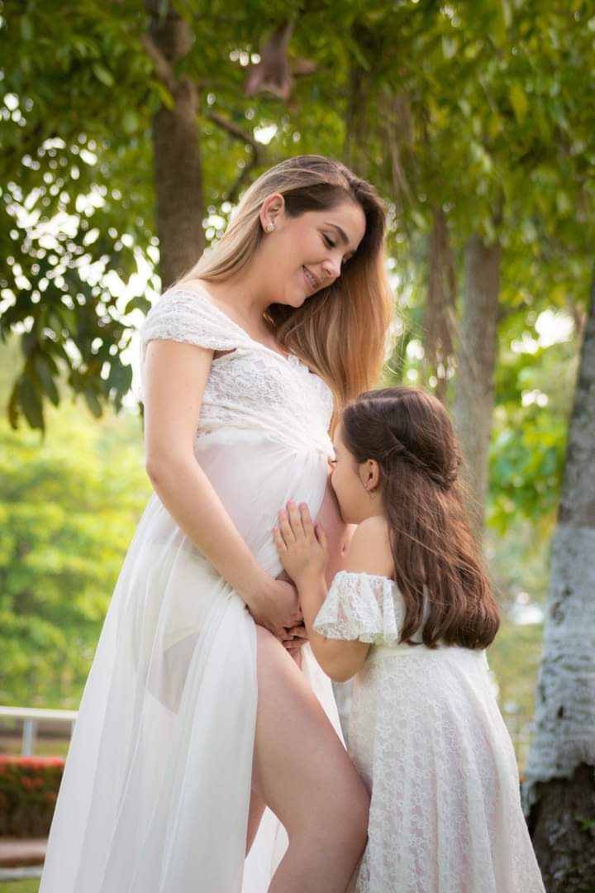
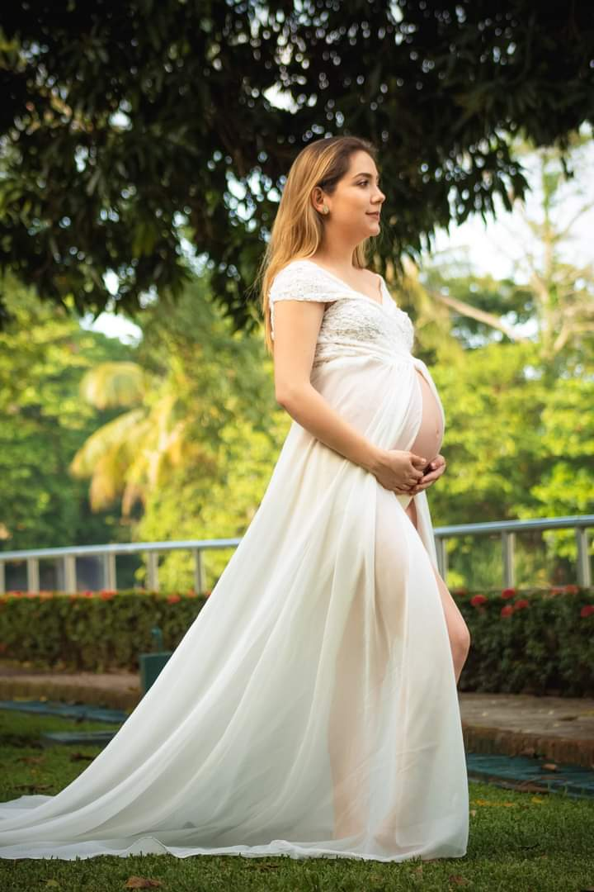
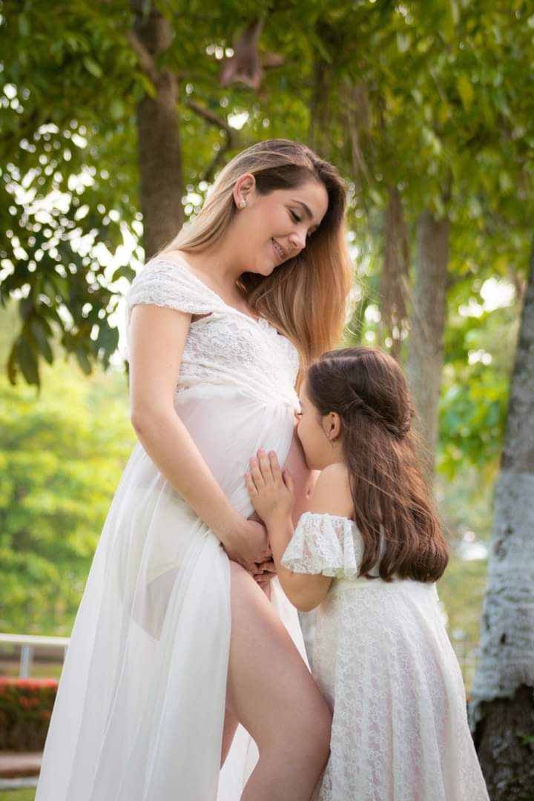
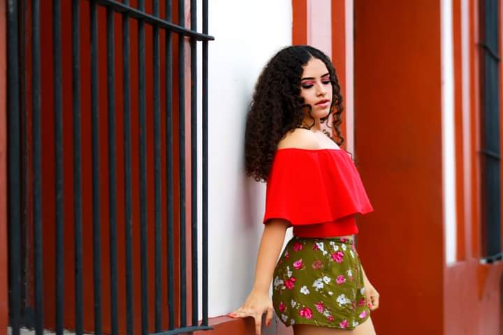
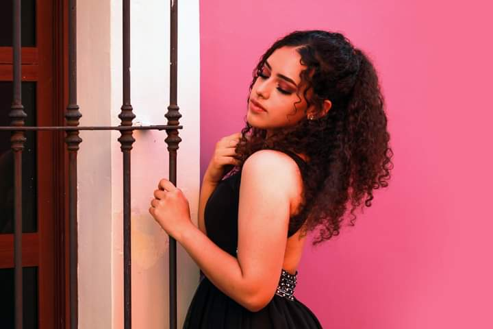
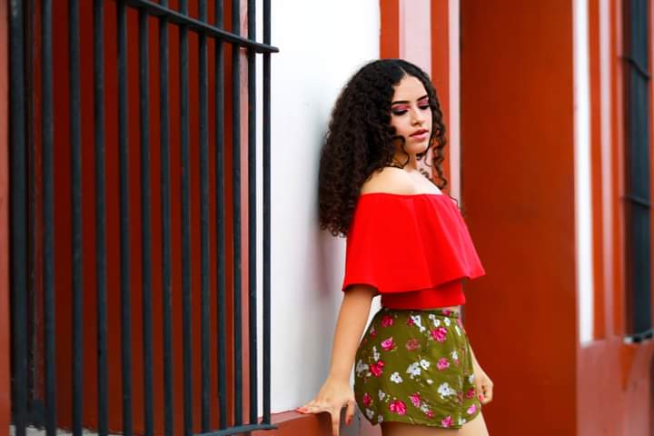
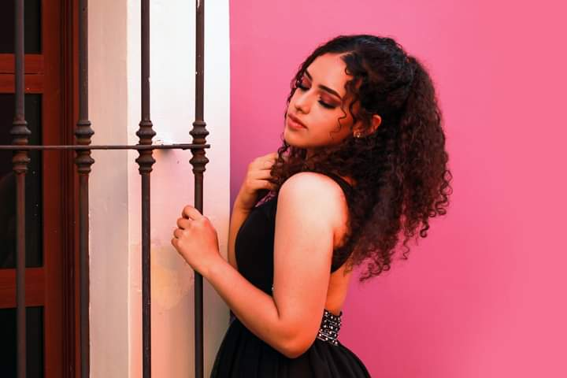

Sesión maternidad
El embarazo para mi es la etapa más bonita de la mujer, una etapa de cambios emocionales donde los sentimientos están a flor de piel por la llegada del nuevo bebé a la familia, en una sesión de fotos, es un momento especial que guardarás para mostrarle a tu futuro hijo o hijos, como era su mamá embarazada… Y ese momento especial, merece ser guardado de la mejor manera. Lo primero que debes saber de esta sesión, es que es un gran momento para disfrutar. Siempre busco la comodidad de la futura mamá en cada toma, y me encargo de reflejar su naturalidad, belleza y personalidad.
Sesión Cake Smash
La sesión Cake Smash es la sesión más alegre y divertida que se le puede realizar a un bebé. Es la celebración de su cumpleaños donde el estudio se vuelve una fiesta exclusiva para él.
La finalidad de la sesión de fotos es que tu bebé destruya su pastel mientras juega dentro de un espacio con una decoración creativa y única de su tema favorito. Y lo mejor es que esta sesión se puede realizar en todas las edades, partiendo del primer año en adelante.
También, más allá de celebrar el cumpleaños de los bebés con esta sesión, celebramos esos momentos en familia irrepetibles.
Sesión modelaje
Indumentaria, zapatos, joyas y cualquier otro accesorio fino es bienvenido en la fotografía de moda, ya que son elementos que juegan un papel importante dentro de esta técnica y le sirven al fotógrafo para realzar el retrato de la modelo. En este tipo de fotografía, la creatividad es un favor que hace la diferencia entre capturas planas o retratos estilizados.


 





 


